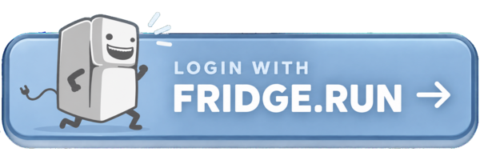

fridge.run
🔒 Private node · invite only
Welcome to the fridge
Chat, shared files and a few friends.

Unauthorized access is prohibited under 18 U.S.C. § 1030 and will be met by this node's anti-intrusion software. Thank you for not hacking!